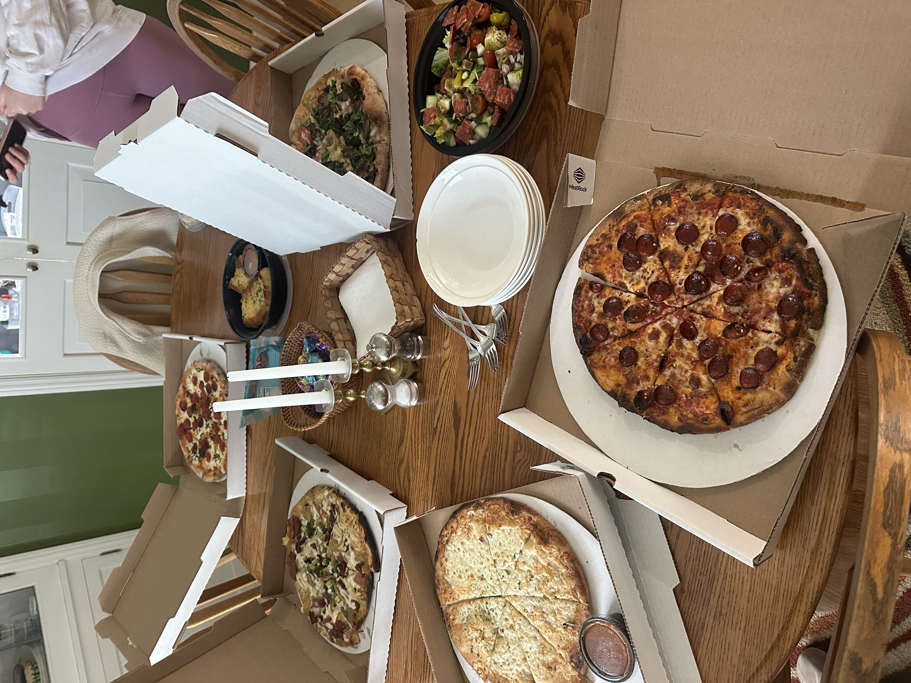

Pizza 🍕
Pizza is my all-time favorite food because it’s fun to share and can be customized in endless ways. I love making it with friends or grabbing a slice after a long run.
My Go-To Pizza Order
- Thin crust
- Extra cheese
- Pepperoni
How to Make a Simple Pizza
- Preheat your oven to 475°F.
- Roll out your dough and add tomato sauce.
- Sprinkle cheese and toppings on top.
- Bake for about 12–15 minutes until golden.
Find fun pizza recipes on AllRecipes.com .